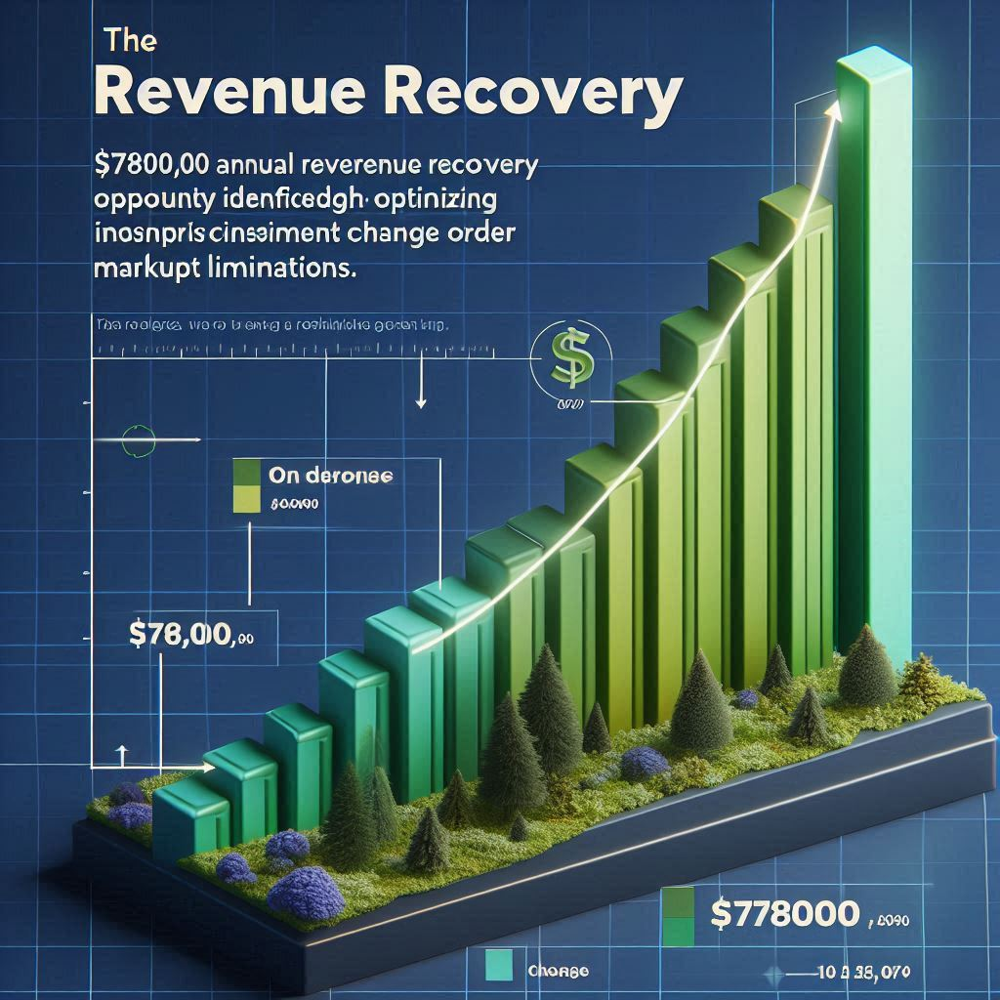

CLIENT PROFILE
Lone Star Development Group, a $420M regional contractor with 18 concurrent projects in the Texas market.
THE CHALLENGE
Managing a complex portfolio with inconsistent contract terms, rising incident rates, and significant hidden regulatory and subcontractor risk.
THE RESULTS
$2.8M+ in identified risk exposure and revenue recovery opportunities. 85% potential gain in contract standardization efficiency.
Flying Blind with "Standard" Agreements
Lone Star Development Group was grappling with issues familiar to many growing contractors. Their portfolio of 18 active projects was managed with 47 different subcontractor agreement templates, creating a chaotic web of inconsistent insurance requirements, indemnification clauses, and change order terms. This lack of standardization exposed them to millions in potential liquidated damages, weather-related delays, and regulatory penalties across four distinct Texas markets.
From Contract Chaos to Data-Driven Clarity
BuildSafe IQ embedded a dedicated team—including legal counsel, a claims advocate, and risk engineers—to deploy our proprietary analysis process. We digitized all 18 contracts and used our proprietary algorithm to score and benchmark them against 500+ regional agreements, instantly flagging high-risk liquidated damages and weather allowance gaps. Our platform then analyzed every subcontractor, integrating OSHA records and litigation history to identify 8 high-risk subs with an average claim cost nearly double the portfolio average.
Quantifiable Impact on the Bottom Line

$780,000 Revenue Recovery
Annual revenue recovery opportunity identified through optimizing inconsistent change order markup limitations.

$2.1M Risk Exposure
Potential financial exposure from inadequate weather allowance days uncovered, allowing for immediate contract renegotiation.

8 High-Risk Subs Mitigated
Proactively identified and managed, mitigating a claims frequency rate 78% higher than the portfolio average.